Travel with Youssef
8\26\2021
تقديــــــــــــــــــــم
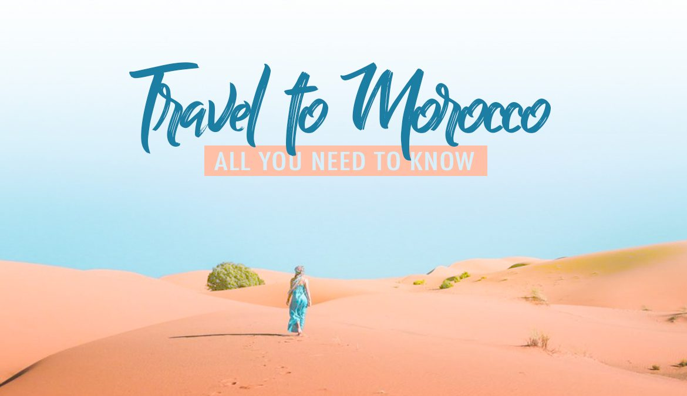ليست رحالات المشي الطويل والتخييم كما يعتقد البعض مجرد رياضة في الهواء الطلق للمحافظة على اللياقة البدنية. لا ليس كذلك عزيزي الرحال، إنما هي مغامرات لاكتشاف الذات أولا والطبيعة المحيطة بها ثانيا، كما تعتبر هذه الرحالات حلقة وصل بين حاضر محتاج وماض مقدس ومستقبل مجهول، فهي تربطك بالحياة البدائية القديمة وتجعلك تكتشف ثقافة شعوب مختلفة وعادات منقرضة وتأخذ بيدك نحو حياة برية خجولة ومنعزلة.
مسارات رحلة المشي الطويل بالمغرب
عزيزي الرحال، سأقترح عليك هذه المناطق الجميلة التي أنصحك أن تزورها خلال رحلتك للمشي الطويل، كما سأزودك بمسار الرحلة ومصادر الماء والطعام، لكن قبل هذا أود أن أذكرك بالمحافظة على نظافة هذه المناطق التي سأعرضها عليك كما كنت قد أشرت سابقا. سأحاول عرض المناطق الكبرى للمملكة وسأذكر جميع الاماكن الطبيعية المتواجدة في تلك المنطقة ثم أنتقل إلى منطقة أخرى وهكذا. طبعا لن أذكر جميع مسارات المغرب لك سأزودك بأكثر عدد ممكن. ملحوظة: ثمن وسيلة التنقل وثمن المبيت في المأوى الذي أذكره في هذا الكتاب فهو ثمن نسبي قد يتغير من فترة لاخرى، كما أنه يعبر عن ثمن الفرد الواحد
منطقة الريف العين الزرقاء

قبل أن تنطلق رحلتك في غمار البرية، أنصحك عزيزي الرحال أن تبدأ رحلتك بالحوض المائي الطبيعي "العين الزرقاء" للاسترخاء ولاستجمام وامتصاص الطاقة الايجابية لبدء رحلة ممتعة للمشي الطويل. العين الزرقاء أو مدشر الزرقاء يبعد عن مدينة تطوان بـ 7 كلم ويقع في جبل غرغيز، وهو مسبح مائي يتميز بعذوبة مياهه المنعشة، يمكنك أخذ سيارة أجرة من المحطة أو من باب العقلة، وسيوصلك إلى غاية العين الزرقاء ومن هناك يمكنك الحصول على مياه الشرب والطعام
منطقة الريف واد القنار

عزيزي الرحال اعلم أن اختيارك لواد القنار اختيار صائب ولن تندم عليه بل ستقرر فور مغادرته العودة إليه في مقبل الايام، يمكنك الذهاب إليه من قبيلة بني حسان بـ 10 دراهم إلى غاية واد الو ثم إلى بوحمد بـ 20 درهم وبعدها إلـى خميس لوطى بـ 10 دراهم، ثم المشي على األقدام لمدة ساعة ونصف لتصل إلى واد القنار، تزود بالماء والطعام من خميس لوطا، يمكنك التخييم في واد القنار كما يوجد مركز تخييمي احرص أن تساعد نفسك بعصي المشي الطويل
منطقة الريف الجبهة
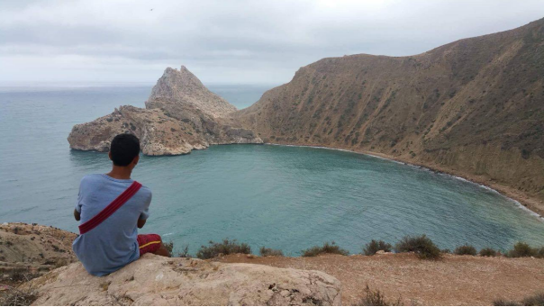يمكنك عزيز الرحال أن تنطلق بعد جبل كلتي مباشرة من بني حسان إلى الجبهة عبر استوقاف السيارات أو الرجوع إلى تطوان ثم الركوب في سيارة أجرى كبيرة بـ 70 درهم أو في الصباح الباكر اركب حافلة بـ 50 درهم إلى غاية الجبهة، يمكنك عزيزي الرحال التخييم في غابة قريبة من القرية، كما يوجد منازل للكرام بـ 200 درهم لليوم، في هذه القرية يمكنكم التزود بالماء والاكل بل يوجد بريد ووكالة تحويل الاموال
منطقة الريف شاطئ كالا ايريس
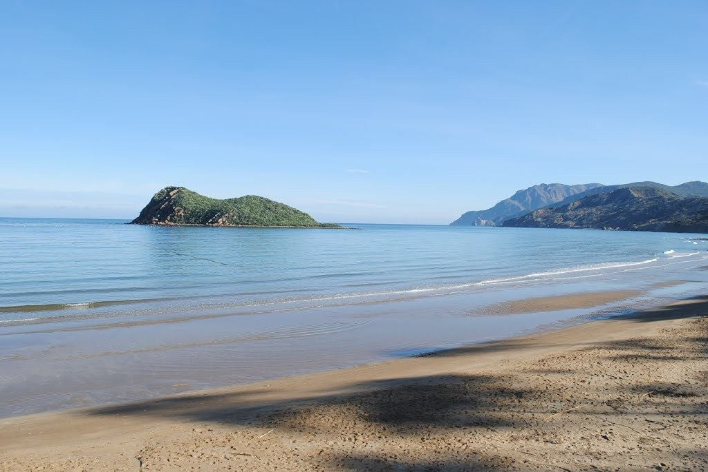شاطئ كال إيريس من أجمل شواطئ منطقة الريف يقع على ساحل البحر الابيض المتوسط تحديدا بقبيلة بني بوفراح التي تبعد بـ 50 كلم غرب مدينة الحسيمة، بعد محطة الجبهة يمكنك الركوب في حافلة تمر من الجبهة مع الساعة 00:14 وسيوصلك إلى غاية قبيلة بني بوفراح بـ 30 درهم اكمال الطريق مشيا على الاقدام إلى غاية شاطئ كآل إيريس مرورا بـ تورريس لمسافة 8 كلم تقريبا، ويوجد بالشاطئ مراكز للتخييم يمكنك التزود بالماء والطعام من مركز قبيلة بني بوفراح
منطقة الريف شاطئ جزيرة باديس
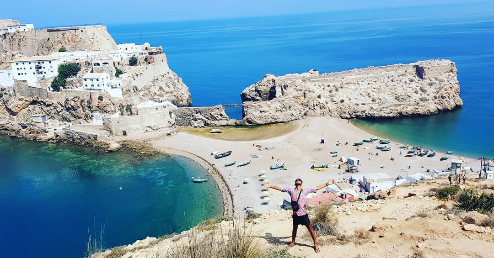شاطئ جزيرة باديس، نسبة إلى الجزيرة المغربية المحتلة من طرف الاسبان وتسمى أيضا جزيرة قميرة، يتواجد هذا الشاطئ الرائع بمدينة الحسيمة بقبيلة امزورن من أروع شواطئ الريف يكتسي جمالية رائعة مع الغروب وتتميز المنطقة بالهدوء التام. عزيزي الرحال لا تنسى أن تزور شواطئ الحسيمة الرائعة خاصة: كيمادور، مطاديرو، كآلبونيتا. ويمكنك زيارتها في يوم واحد فهي متواجدة بالقرب من مركز مدينة الحسيمة
منطقة الريف شاطئ العجوزة "تاوسارث"
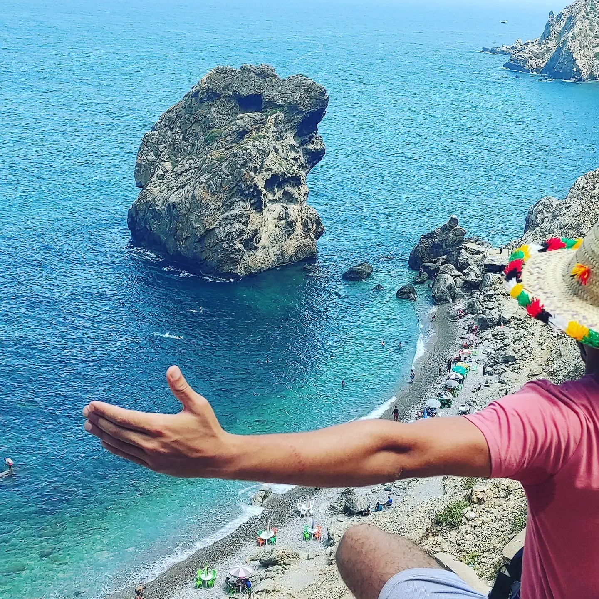عزيزي الرحال قبل أن تغادر مدينة الحسيمة أقترح عليك محطة شاطئية أخرى، إني أتحدث عن شاطئ ثاوساث، وهو أيضا من أجمل شواطئ المغرب ويبعد بـحوالي 20 كلم عن مدينة الحسيمة، يمكنك الركوب بسيارة أجرة من الحسيمة إلى قرية الرواضي ومن ثم في سيارة أجرة إلى قرية ثاوساث ومن هناك يمكنك التزود بالماء والطعام، ثم تتوجه مشيا لمدة ساعة بجانب الوادي إلى غاية الوصول إلى جبل ثاوساث ثم تنزل 700 درج من السلم الصخري وها أنت في شاطئ ثاوساث الساحر
منطقة الريف حامة الشعابي
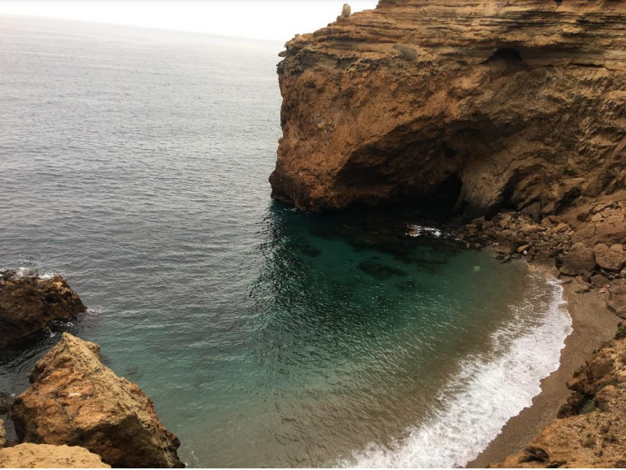حامة الشعابي من الشواطئ الرائعة بمنطقة الريف، يتميز هذا الموقع الساحر بمنبع ماء دافئ صالح للشرب ومياه بحر هادئة كما تكتسيه جمالية صخرية لجرف عالي جدا، يمكنك أن تذهب إلى حامة الشعابي عن طريق الحسيمة أو من الناظور فالشعابي نقطة وسط بين المدينتين، عليك عزيزي الرحال أن تركب في حافلة متجهة نحو الناظور من محطة الحسيمة بـ 45 درهم أو في سيارة أجرى تمر بالطريق الساحلي عبر قبيلة تزغين بـ 60 درهم، يمكنك التزود بالطعام من الحسيمة، أما المياه فهي موجودة في الشعابي بمنبع الحامة أو من خلال مسجد قريب من شاطئ الشعابي، يتميز هذا الشاطئ بتوقيت محدد للرجال والنساء، فالنساء توقيتهن من الثامنة صباحا إلى الثانية زوآل، والرجال من الثانية إلى السابعة صباحا، وأنصحك عزيزي الرحال أن تجعل شاطئ الشعابي يوم الخميس ضمن برنامج رحلتك، لان يوم الجمعة مخصص كله للرجال فلا تضطر إلى مغادرة الموقع صباحا، وأنصحك عزيزي الرحال فور وصولك للشاطئ الذهاب إلى الثكنة العسكرية القريبة من الشاطئ لاخذ إذن بالتخييم لانه يمنع في بعض ألاحيان التخييم بهذا الموقع. ملحوظة: يمنع منعا كليا في شاطئ الشعابي التخييم في مجموعة تتكون من الذكور والاناث
منطقة الريف شاطئ جزيرة المهندس
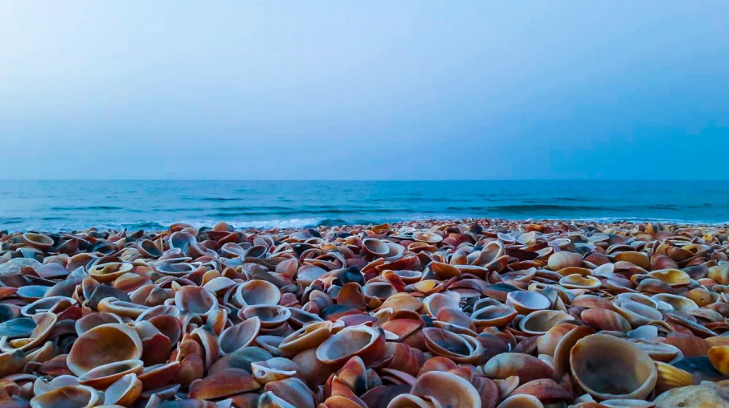 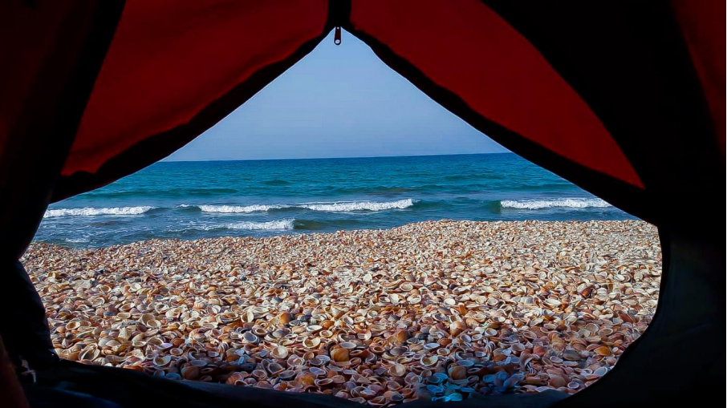عزيزي الرحال ما رأيك في زيارة مملكة الصدفيات البحرية بشاطئ جزيرة المهندس بجماعة أركمان إقليم الناظور، إذ يمكنك الركوب من محطة حافلات الناظور في حافلة رقم 8 المتجهة إلى قرية أركمان بـ 8 دراهم، ومن ثم المشي على الاقدام لمسافة 7 كلم، يمكنك التزود بالماء والطعام من دكاكين قرية أركمان
منطقة الريف شاطئ سيدي البشير
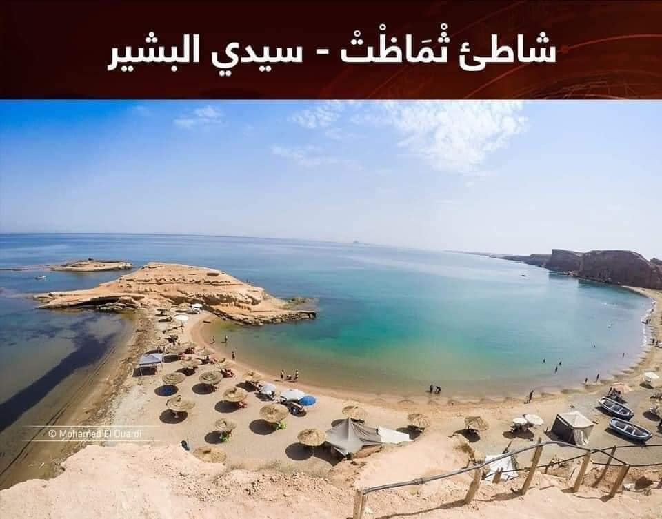 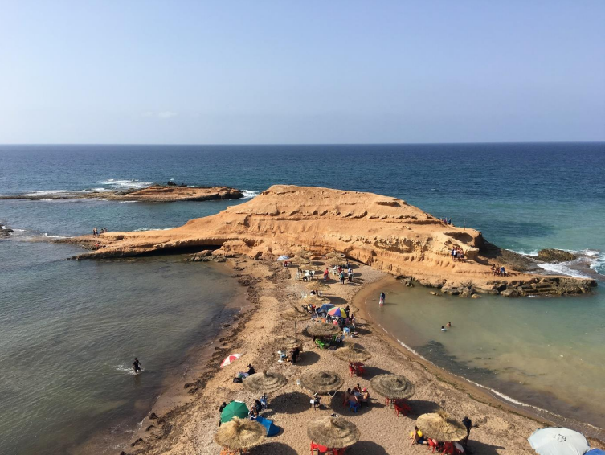عزيزي الرحال إذا فكرت في زيارة شاطئ سيدي البشير أو تماضت فاعلم أنك تزور أحد أروع الشواطئ العشرة في العالم حسب مجلة "youreading magazin " الامريكية، شاطئ سيدي البشير يتوجد بجماعة البركانيين بين جماعتي قرية أركمان ورأس الماء بإقليم الناظور، يمكنك الذهاب إلى شاطئ سيدي البشير إنطالقا من الناظور بمحطة سيارات الاجرة خط الناظوررأس الماء بـ 35 درهم، إلى غاية الطريق التي تؤدي إلى الشاطئ ومن ثم المشي لمسافة 4 كلم تقريبا على الاقدام، وتزود بالطعام من الناظور أما الماء يمكنك الحصول عليه من دكاكين قرية تماضت.
منطقة الريف شاطئ كاالبالنكا
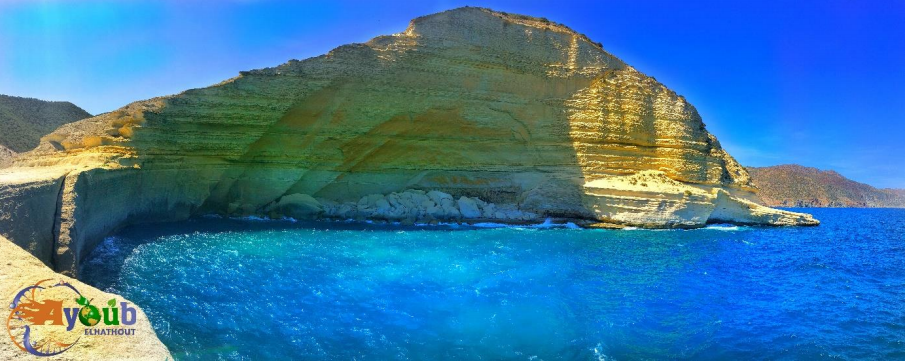 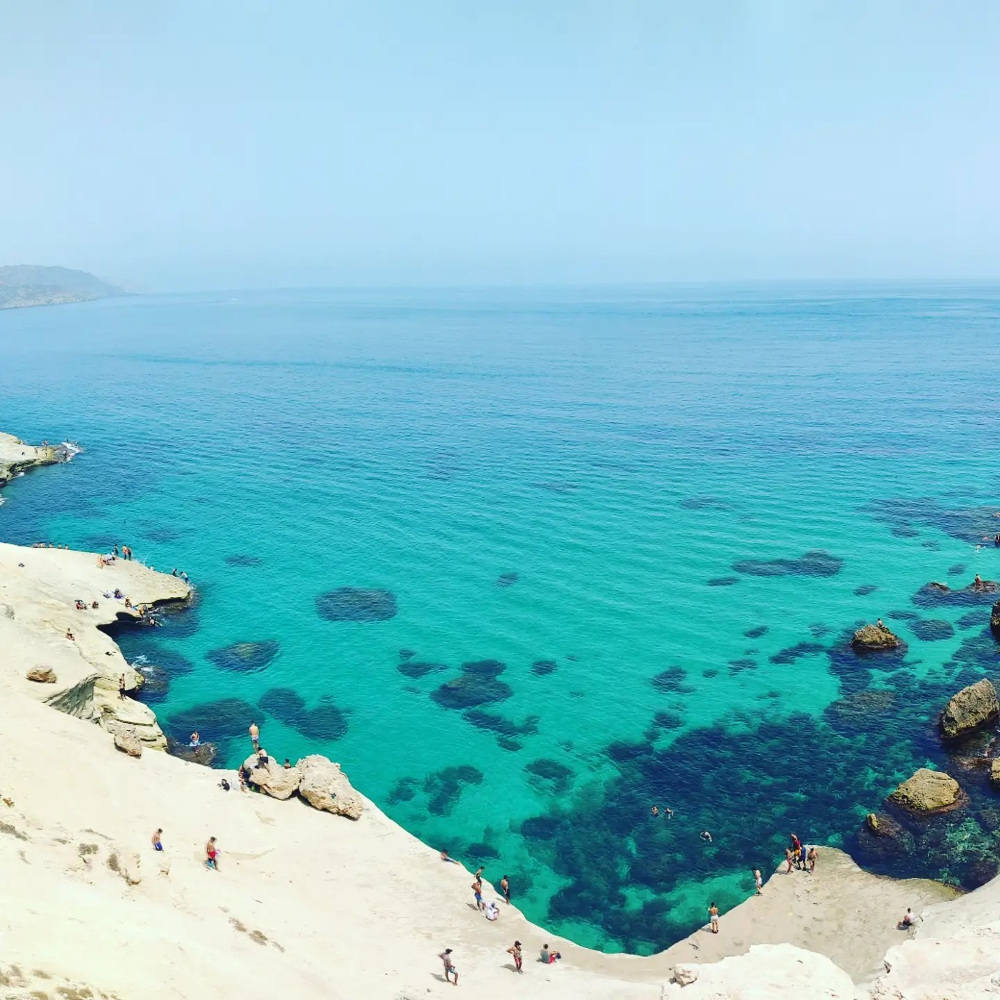شاطئ كآلابالنكا الذي يتواجد بإقليم الناظور جماعة آيت شيشار، وهو من الشواطئ الرائعة بالريف ويطل على ميناء مدينة مليلية المحتلة، يتميز ببنية صخرية بيضاء ساحرة ومياه زرقاء صافية. عزيزي الرحال إذا وصلت إلى مدينة الناظور، اذهب إلى محطة سيارات الاجرة المؤدية إلى فرخانة بـ 10 دراهم، ثم تزود منها بالطعام، ثم اركب في سيارة أجرة إلى تاوريرت كآلبالنكا بـ 7 دراهم، ثم على يمين مدرسة تاوريرة تنزل إلى الشاطئ في طريق معبد للسيارات إلى غاية الزاوية البغدادية 3 كلم، وعلى يمينك تزود من الساقية بالماء الصالح للشرب ثم خذ طريقك أسفل مدرسة ابتدائية متبعا الطريق إلى غاية صخرة كأس العالم، يمكنك التخييم في الغابة التي تلي المدرسة التي مررت بها في طريقك لان التخييم في الشاطئ غير مسموح به، ومن ثم عرج للذهاب إلى كآلابلانك آلصخرية متبعا الطريق أعلى كأس العالم، وبعدها إلى كآلبالنكا الرملية التي يسمح بها التخييم بعد تسجيل معلوماتك بالثكنة المتواجدة أعلى الجبل. ملحوظة: خذ معك طعامك ومياه كافية إلى كآلبالنكا الصخرية وإلى كآلبالنكا الرملية انعدام مصادر مياه الشرب.
منطقة الريف شاطئ ثيبــوذا
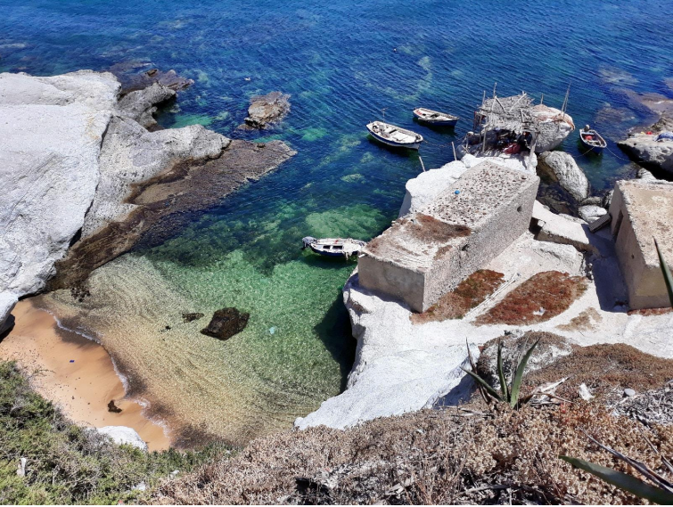عزيزي الرحال، بعد شاطئ كآلبالنكا شد رحالك إلى شاطئ ثيبوذا الذي لا يبعد كثيرا عن مدخل كالبالنكا بتاوريرت، يمكنك الركوب عبر استوقاف السيارات أو بسيارة أجرة كبيرة بـ 20 درهم للفرد إلى غاية شاطئ ثيبوذا، واحصل على الماء والطعام من تاوريرت ويمكنك التخييم بشاطئ ثيبوذا والاستمتاع بجمال المنطقة
منطقة الريف شاطئ Cap de trois fourches
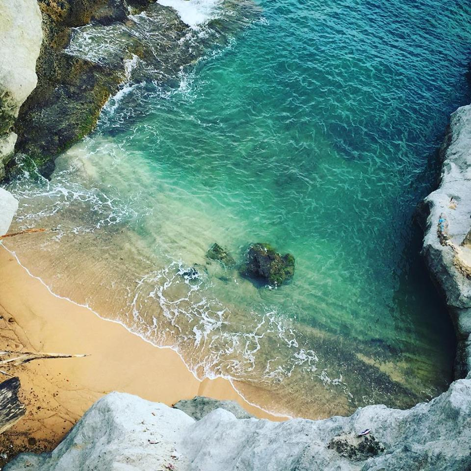 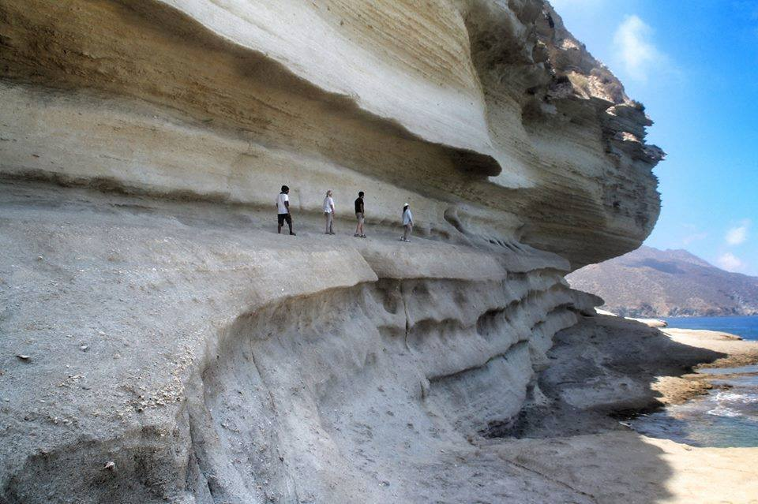 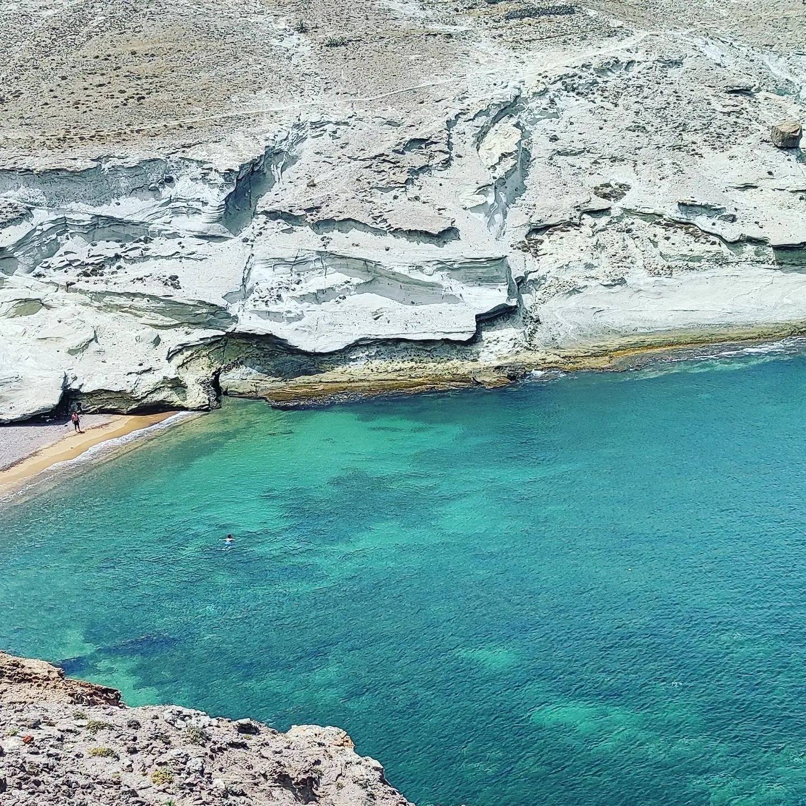عزيزي الرحال اعلم أنك على مشارف نهاية شواطئ الريف لكن قد بقي لك أروعها وأمتعها، فأنت الان تتجه إلى شاطئ المدرات الثالث الذي يتميز بجمال طبيعي رائع، ويمكنك الذهاب إليه مشيا على الاقدام حوالي 8 كلم من شاطئ ثيبوذا كما يمكنك الذهاب في سيارة أجرى كبيرة بـ 20 درهم مع الساعة الثامنة صباحا، يوجد بالقرب من الشاطئ دكان تتزود منه بالماء والطعام، ولا تنسى عزيزي الرحال أن تزور "المنارة" التي تطل على منظر جميل يجمع بين مياه وجبال الريف
منطقة الريف شاطئ تشـارانا
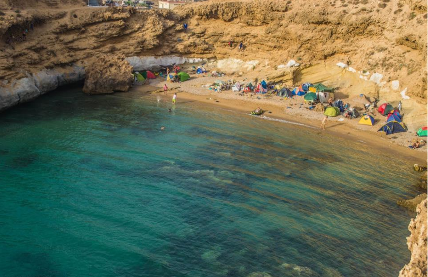 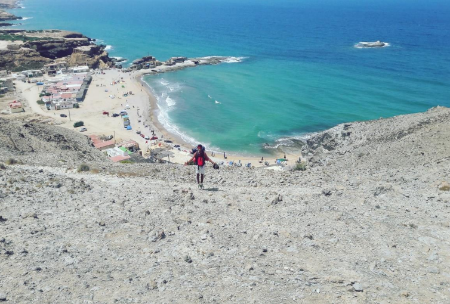عزيزي الرحال قبل أن تودع شواطئ الريف أنصحك بشاطئ تشارانا، وهو من بين أجمل شواطئ المملكة إذ يجعلك تعيش لحظات شاطئ هواي على سواحل الريف، ويمتاز شاطئ تشارانا بمياهه الزرقاء الصافية وبهندسة صخرية تخطف الابصار. يمكنك الذهاب إلى شاطئ تشارانا من فرخانة في سيارة أجرة كبيرة بـ 30 درهم للشخص الواحد، إلى غاية الشاطئ ويمكنك التخييم فيه والحصول على الماء والطعام من فرخانة
منطقة الريف جبل أوكسان
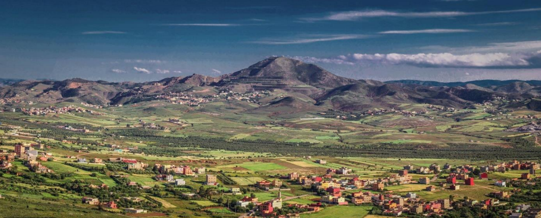 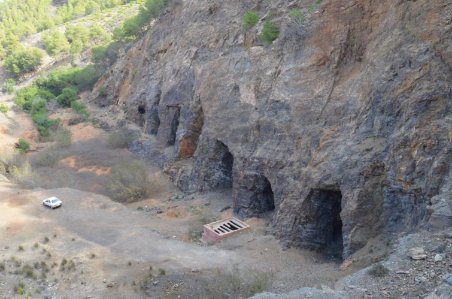عزيزي الرحال قد أشرفت على إتمام مسار منطقة الريف، وأقترح عليك باختتامه بجبل أوكسان، هذا الجبل الذي يجمع بين جمال الطبيعة وبقايا أكبر منجم للحديد بمنطقة الريف بعد استنزافه خلال فترة الاستعمار الاسباني، إذ ستجذ آلات عمالقة بالمنجم وأنفاق كبيرة وبحيرة الكبريت، هذا المسار قصير جدا ربما سيأخذ منك نصف اليوم فقط، ستركب من جماعة أفرا قرب أزغنغان بسيارة أجرة كبيرة بـ 8 دراهم إلى غاية مدخل غابة أوكسان ومن ثم ستجد عالمة تشوير طرقي إلى "ساطوالسة" وهو منجم الحديد ومن ثم إلى بحيرة أوكسان ثم سبع مغارات وهي كذلك محطة رائعة للاستمتاع
منطقة الأطلس المتوسط 1 ٲݣلمام أزيزا
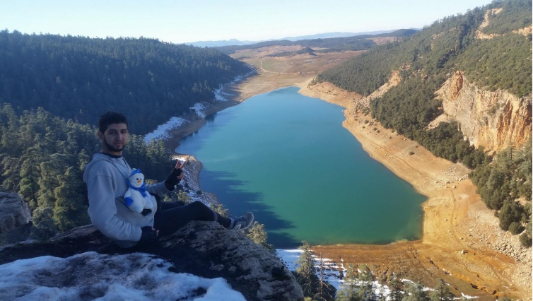عزيزي الرحال عندما تفكر في مسار منطقة الاطلس المتوسط بجهة بني ملالخنيفرة فالا بد لك من زيارة ٲݣلمام أزيزا وتعني البحيرة الخضراء، هي بحيرة كبيرة تبعد عن مدينة خنيفرة بـ 30 كلم، هذه البحيرة الساحرة التي تجذب سياح العالم لجمالها واحتوائها على ثروة سمكية متنوعة، يمكنك الذهاب إليها من المحطة الطرقية لمدينة خنيفرة في حافلة رقم 1 إلى غاية منطقة أملو تحديدا في تيزي إميزان وتزود منها بالماء والطعام، ويستحسن الوصول إليها في الصباح الباكر للحصول على وسيلة نقل إلى أكلمام أزيزا. كما يمكنك الذهاب إليها مشيا على الاقدام من منابع أم الربيع لمسافة 21 كلم في مسار سهل ومليء بالمناظر الطبيعة الساحرة
منطقة الأطلس المتوسط 1 بحيرة تݣلمامين
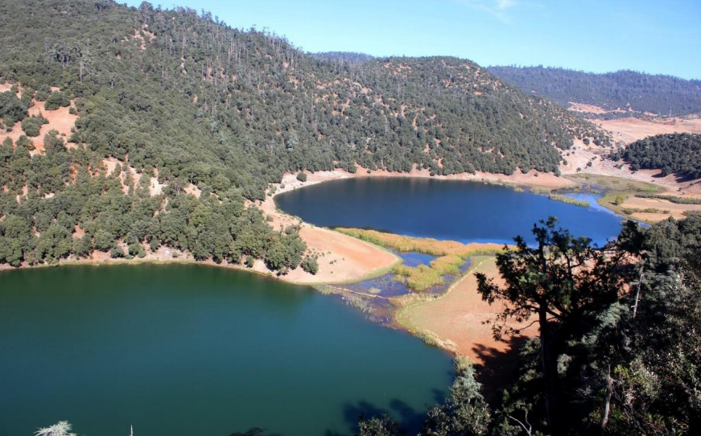عزيزي الرحال لا تبتعد بعيدا فأنت على موعد مع أجمل بحيرات الاطلس المتوسط وهما بحيرتان على شكل نظارة محيطة بغابة خضراء ساحرة، تبعد عن أكلمام أزيزا بـ 30 كلم وفي ارتفاع يصل 1800 متر عن سطح البحر، يمكنك الذهاب إليها من أكلمام أزيزا بالنقل المزدوج إلى منطقة قريبة من بحيرة تݣلمامين، وفي حالة تعذر وجود النقل المزدوج يمكنك الخروج إلى الطريق مع 30:7 للاستوقاف درجة نارية ثالثية العجالت، أو المشي على الاقدام إلى غاية منطقة أجدير حوالي 15 كلم ومن هناك يمكنك الحصول على وسيلة نقل إلى بحيرة تݣلمامين. واحصل على الماء والطعام من أجدير
منطقة الجنوب عين أسماء

عزيزي الرحال حان توديعك من جنوب الصحراء واخترت لك عين أسماء خط لنهاية مسارك الشيق، فعين أسماء الكبريتية الساخنة 39 درجة مئوية، يمكنك أن تجعلها حمام ساخن يرخي عضالتك ويعيد فيك الطاقة من جديد، يمكنك الذهاب إليها بسيارة الدفع الرباعي ،عزيزي الرحال يمكنك الذهاب إلى جميع المحطات التي ذكرتها لك في الداخلة بسيارة الدفع الرباعي التي تستأجرها بـ 250 درهم للفرد. يمكنك العودة عزيزي الرحال إلى منزلك أو تغيير مسار رحلتك من خلال حافلة توصلك إلى غاية الدار البيضاء بـ 600 درهم أو عبر طائرة خط مطار الداخلة – مطار الدار البيضاء بـ 1000 درهم
اضغط هنا لتحميل المزيد من الاماكن
نصائح عامة
١ـ إذا خرجت في مجموعة وافق على مشاركة استخدام بعض المعدات مثل الخيام وبعض معدات المطبخ وتوزيع الوزن بينكما وفقًا للقدرات البدنية التي يتمتع بها كل فرد من المجموعة
٢.تجنب حمل العبوات والعلب المعدنية واستبدلها بمعدات البالستيك لأنها أخف وزنا
٣. تعتبر المياه الصالحة للشرب أهم شيء ضروري يمكنك حمله، لكن لتجنب الحمولة الزائدة حاول استكشاف مسار الرحلة وتعرف على مواقع المياه فيه، فكثير من المنتزهات الوطنية والقرى تحتوي على منابع وصنابير مياه عمومية
٤.نفس الأمر يتعلق بنار الطهي، إذا كنت تنوي التخييم في منتزه غابوي يحتوي على حطب جاف، فهذا يجعلك تستغني عن حمل موقد النار
٥.هناك بعض المنتزهات الوطنية توفر مراكز استقبال مجانية أو بثمن رمزي كملجأ، مأوى بدائي كل هذا يجعلك تستغني عن مجموعة من األشياء مثل الخيمة وأواني المطبخ
٦.حاول دائما غسل اواني المطبخ بالتراب أولا ثم استعمل المياه والصابون
٧.تجنب اكواب البالستيك واستبدلها بأكواب ألمنيوم خفيفة
٧.تجنب اكواب البالستيك واستبدلها بأكواب ألمنيوم خفيفة
٨.احمل معك دائما بطاريات إضافية للمصابيح
٩. احمل معك إلى جانب وثائقك الشخصية بطاقة تحمل عنوانك الشخصي ورقم أحد أقاربك وفصيلة دمك في حالة وقوع حادث لقدر الله
١٠. اعلم أن النار لن تشتعل لك في علو أكثر من 3000م كما يشكل التخييم في القمم خطر على سالمتك، وينصح بالعودة من القمم التي تتجاوز 3000م قبل الثانية زوآل حتى ال تصادف التقلبات والعواصف التي تنشط في القمم خالل المساء
١١. اعلم أن السلطات المحلية لكل منطقة تسعى جاهدة في حمايتك والحفاظ على سالمتك فلا تصعب عليهم مهمتهم خلال بحثهم معك وقدم لهم كل الوثائق المطلوبة، كما أنصحك عزيزي الرحال أن تنصاع لأوامرهم في حالة تم منعك من التخييم فكل هذا يدخل ضمن سالمتك
١٢. بمجرد أن تستوقف سيارة في الطريق تحدث معه بابتسامة عريضة ووضوح تام وابدأ كلامك بالتعريف باسمك وبمدينتك وعرفه عن ثقافة المشي الطويل، بعد ذلك أخبره عن رغبتك في الذهاب إلى المكان الذي تقصده وأخبره أنك لا تملك أجرة الذهاب كي يتفهم أنك لا تستأجره
١٣. لا تسهر كثيرا ولا تحدث ضجيجا وتذكر أنه معك أصدقاء أخرين قد تعبوا من المشي ويريدون النوم و الراحة
١٤. كما أنصحك عزيزي الرحال أن تترك سماعات الأذن في المنزل، فأنت مقبل على الاستمتاع بموسيقى الطبيعة، وعليك الانصات للطبيعة أثناء الطريق فأنت تتجول في البرية ويحتمل خروج حيوانات اثناء اقترابك من منطقتها
١٥. أنصحك عزيزي الرحال أن تذهب في مجموعة لا تتجاوز 5 أفراد فكلما زاد العدد إلا وكنتم عرضة للمنع من التخييم لأنه يشكل محل جلب الأنظار، كما سيسهل على الناس استضافتكم في منازلهم، أو خلال عملية استوقاف السيارات
١٦. لا تتردد في طبع هذا الكتاب إلى نسخة ورقية لكي يسهل عليك استعماله وحتى لا تضطر إلى استهلاك بطارية هاتفك
اضغط هنا لتحميلهYoussef Bambam